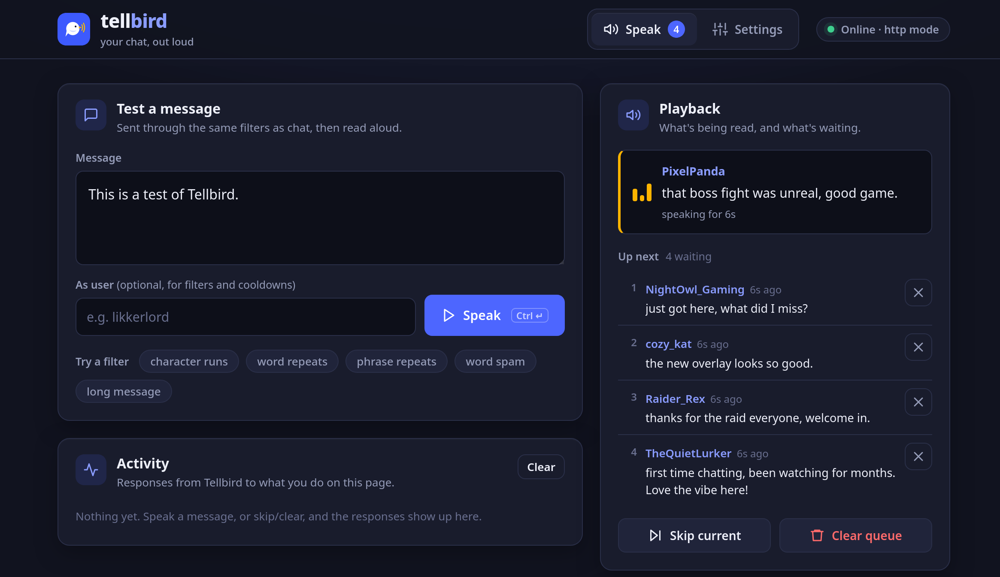

Your chat, out loud.
Tellbird reads your Twitch chat aloud with a natural-sounding voice that runs on your own computer. Free, open source, and set up in minutes.

Made for streamers,
built to stay out of your way.
Runs on your computer
The voice is generated locally by Kyutai's Pocket TTS. No cloud service, no per-message costs, and no gaming GPU needed.
No login, no keys
Enter your channel name and you're done. Tellbird just listens to your public chat. It never needs your Twitch password or a token.
Keeps spam in check
Skips commands and bots, turns links into "link", tames "aaaaaaa", and stops copypasta floods before they reach the voice.
You stay in control
See what's being read and what's waiting, live. Skip a message, remove one from the queue, or clear everything.
Plays well with your tools
Stream Deck buttons, Firebot and Mix It Up can skip, clear, or hand Tellbird exactly the text to speak.
Free and open source
MIT licensed, with the full source on GitHub. No ads, no tracking, no premium tier.
On air in three steps.
No config files, no terminal. Everything happens in Tellbird's control panel.
Install and start
Download Tellbird for your system and start it. The first start downloads the voice once (a few minutes), and a bird icon appears in your system tray.
Enter your channel
Open the control panel from the tray icon, type your Twitch channel name and click Save & apply. Test it with the Speak button.
Add it to OBS
Capture it with Desktop Audio, or route it to its own source with a virtual cable like VB-CABLE or BlackHole for a separate volume slider.
Your chat, minus the noise.
Chat isn't always made for reading aloud. Tellbird cleans every message up first, and you decide how strict it is.
- Commands and bots are skipped: anything starting with
!, and accounts like Nightbot or StreamElements. - Chat slang is spoken properly: "brb" becomes "be right back". Add your own community's words.
- Emotes are left out, including BTTV, FFZ and 7TV ones you list.
- Optional extra filters: per-user cooldowns, word spam, repeated messages and copypasta floods. Filters can also trigger a Firebot action, e.g. to time someone out.
Fits into your setup.
Let Tellbird read chat on its own, or have the bot you already use decide what gets read, for channel point redeems, a !tts command, or anything else.
Get Tellbird.
Free for Windows, macOS and Linux.
Questions, answered.
Is Tellbird really free?
Yes. It's open source under the MIT license, with no ads, accounts or paid features. Because the voice runs on your own computer, there are no per-message costs either.
Does it need a powerful PC?
No gaming GPU is needed: the voice runs on the processor. It's busy for a moment while each message is prepared, and idle the rest of the time.
Which voices are there?
A set of built-in English voices, such as Alba, Anna, Charles, Eve, George, Jane, Mary, Michael, Paul and Vera. You switch between them in the control panel, and the change takes effect right away.
Windows or macOS warns me about the download. Is it safe?
The installers aren't code-signed yet, which is why Windows SmartScreen or macOS Gatekeeper asks first. On Windows click More info → Run anyway. On macOS right-click the app and choose Open. The source code and the automated builds are public on GitHub.
Does it work on an Intel Mac?
Not at the moment. The macOS download is built for Apple Silicon (M1 and newer).
Can viewers trigger it with channel points or a command?
Yes, through Firebot, Mix It Up or a similar bot: switch Tellbird to "http" mode and let your bot send it the text to speak. The README on GitHub shows the exact setup.
Is my chat sent anywhere?
No. Tellbird reads your public Twitch chat and turns it into speech on your computer. Nothing is uploaded, and there's no tracking.